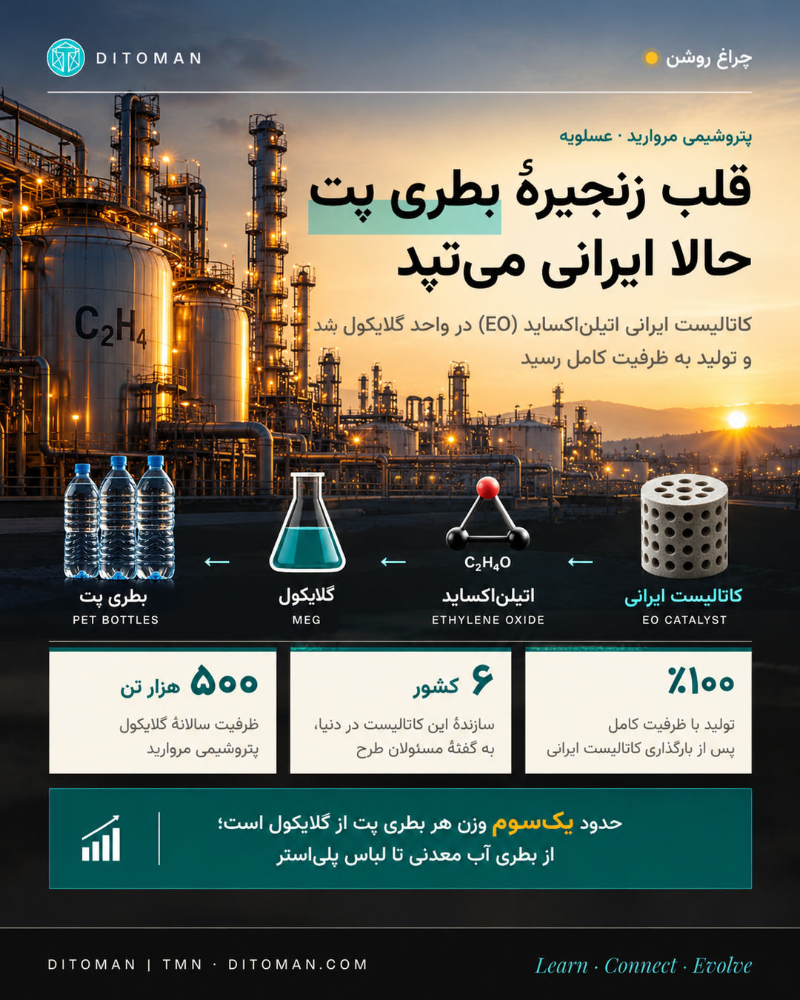

The Heart of the PET Bottle, Now Made in Iran
An Iranian-made ethylene oxide (EO) catalyst has been loaded into Morvarid Petrochemical's glycol unit in Asaluyeh, and the unit is producing at full capacity. What a catalyst is, how this one works, where it sits in the petrochemical chain, and what its products end up in.
بطری آب معدنیای که از قفسهٔ سوپرمارکت برمیداریم، چه در تهران، چه در لیسبون، داستانش از مادهای شروع میشود که کمتر کسی اسمش را شنیده: کاتالیست اتیلناکساید. حالا در پتروشیمی مروارید عسلویه، این کاتالیست ساخت داخل است و واحد با ظرفیت کامل کار میکند. در این صفحه با هم میبینیم این کاتالیست چیست، چطور کار میکند و محصولش به کجا میرسد.
۰۱. چه اتفاقی افتاد؟
به گزارش خبرگزاری دانشجو، بارگذاری کاتالیست ایرانی EO در واحد تولید مونواتیلن گلایکول (MEG) پتروشیمی مروارید کامل شده و تولید به ظرفیت ۱۰۰ درصد رسیده است. حسام خوشبینفر این را دستاوردی راهبردی و کمسابقه توصیف کرده و گفته ایران در کنار ۶ کشور سازندهٔ این محصول در دنیا قرار گرفته است. به گفتهٔ او، بومیسازی این کاتالیست، بهعنوان گلوگاه فناوری زنجیرهٔ MEG و پلیاستر، با وجود ریسک فنی بالایی که معمولاً صنایع را به سمت واردات میبرد، با تکیه بر توان داخلی به نتیجه رسید.
۰۲. کاتالیست چیست؟
کاتالیست مادهای است که یک واکنش شیمیایی را ممکن یا سریعتر میکند، بیآنکه خودش در واکنش مصرف شود. میشود آن را به یک راهنمای کوهستان تشبیه کرد: مولکولها را از مسیر کوتاهتر و آسانتری عبور میدهد، ولی خودش در پایان سفر سر جایش میماند.
در صنعت پتروشیمی، بسیاری از محصولات بدون کاتالیست اصلاً تولید نمیشوند، یا با هزینه و انرژی بسیار بیشتر تولید میشوند. به همین دلیل کاتالیستها را «قلب» واحدهای تولیدی میدانند.
۰۳. کاتالیست EO چطور کار میکند؟
در واحد اتیلناکساید، گاز اتیلن با اکسیژن خالص ترکیب میشود تا اتیلناکساید (C₂H₄O) بسازد. این واکنش ساده به نظر میرسد، اما سختترین بخشش کنترل آن است:
- ساختار: کاتالیستهای EO در صنعت معمولاً از ذرات بسیار ریز نقره روی یک پایهٔ متخلخل از آلومینا ساخته میشوند، به همراه مقدار کمی مواد افزودنی (پروموتر) که عملکرد را بهتر میکنند.
- راکتور: کاتالیست درون هزاران لولهٔ باریک در یک راکتور بزرگ بارگذاری میشود. واکنش گرماده است و گرمای آن با آب در حال جوش اطراف لولهها گرفته میشود.
- رقابت دو واکنش: اتیلن میتواند به جای اتیلناکساید کامل بسوزد و به دیاکسید کربن و آب تبدیل شود. هنر کاتالیست این است که سهم واکنش مفید را بالا نگه دارد. به این نسبت «گزینشپذیری» (Selectivity) میگویند.
- چرا مهم است: هر درصد گزینشپذیری بیشتر، یعنی اتیلن کمتری هدر میرود و دیاکسید کربن کمتری تولید میشود. در واحدی به این بزرگی، تفاوت چند درصدی به دهها هزار تن خوراک در سال میرسد.
- عمر: این کاتالیستها با گذشت زمان افت میکنند و هر چند سال یک بار در تعمیرات اساسی تعویض میشوند. یعنی تأمین آن یک نیاز تکرارشونده است، نه یک خرید یکباره.
۰۴. در کدام شاخهٔ پتروشیمی؟
پتروشیمی مروارید در منطقهٔ ویژهٔ اقتصادی انرژی پارس در عسلویه است و در «زنجیرهٔ اتیلن» کار میکند. مسیر از گاز پارس جنوبی شروع میشود:
- گاز اتان از پالایشگاههای پارس جنوبی
- واحد الفین: اتان در کورهها شکسته میشود و حدود ۵۰۰ هزار تن اتیلن در سال تولید میشود
- واحد گلایکول: حدود ۳۴۰ هزار تن از این اتیلن، با اکسیژنی که پتروشیمی دماوند تأمین میکند، روی کاتالیست EO به اتیلناکساید تبدیل میشود
- محصول نهایی: اتیلناکساید با آب واکنش میدهد و گلایکول میسازد: حدود ۵۰۰ هزار تن مونواتیلن گلایکول (MEG)، ۵۰ هزار تن دیاتیلن گلایکول (DEG) و ۳۴۰۰ تن تریاتیلن گلایکول (TEG) در سال
یعنی این کاتالیست درست در نقطهای کار میکند که یک خوراک خام (اتیلن) به یک محصول میانی با ارزش بالا تبدیل میشود.
۰۵. محصولاتش به کجا میرسد؟
- بطری و بستهبندی پت: پت از ترکیب گلایکول با اسید ترفتالیک ساخته میشود و حدود یکسوم وزن هر بطری پت از گلایکول است: بطری آب معدنی، نوشابه، روغن و ظروف غذا.
- الیاف پلیاستر: بزرگترین مصرف گلایکول در دنیا؛ لباس، فرش، پرده، کیسهخواب و پارچههای صنعتی.
- ضدیخ و مایع خنککننده: در رادیاتور خودرو و سیستمهای سرمایش صنعتی.
- DEG و TEG: در رزینها، حلالها و رطوبتگیری از گاز طبیعی؛ همان کاری که در خود پالایشگاههای گاز انجام میشود.
- خود اتیلناکساید (در زنجیرههای دیگر): مادهٔ اولیهٔ شویندهها و شامپوها، اتانولآمینها برای شیرینسازی گاز، حلالهای رنگ و روغن ترمز، و استریل کردن تجهیزات پزشکی.
۰۶. چقدر میارزد؟
قیمت قرارداد آسیا برای مونواتیلن گلایکول در نوامبر ۲۰۲۶، ۸۸۰ دلار هر تن اعلام شده است. اگر ظرفیت ۵۰۰ هزار تنی مروارید را در این قیمت ضرب کنیم، ارزش تولید سالانهٔ MEG این واحد حدود ۴۴۰ میلیون دلار میشود. این یک برآورد ساده است: قیمت فروش واقعی، هزینهها و میزان تولید سالانه میتواند با آن فرق داشته باشد. اما نشان میدهد چه گردش تولیدیای حالا روی کاتالیستی ساخت داخل میچرخد.
بازار جهانی کاتالیست EO در دست چند شرکت معدود است. برای واحدی که هر چند سال یک بار باید کاتالیستش را عوض کند، داشتن منبع داخلی یعنی وابستگی کمتر به واردات، زنجیرهٔ تأمین کوتاهتر و پشتیبانی فنی در دسترستر.
آنچه هنوز نمیدانیم
دنبال این جزئیات هم گشتیم: سازندهٔ دقیق کاتالیست، تاریخ بارگذاری، گزینشپذیری آن در مقایسه با نمونهٔ خارجی، و میزان صرفهجویی ارزی. در منابع در دسترس، هیچکدام را با عدد قابلبررسی پیدا نکردیم. ادعای «۶ کشور سازنده» هم از گفتهٔ مسئولان طرح است و ما آن را مستقل تأیید نکردهایم. عملکرد واقعی یک کاتالیست در طول عمر کاریاش مشخص میشود؛ با هم دنبالش میکنیم و اگر آمار تأییدشدهای منتشر شد، این صفحه را بهروز میکنیم.
جمعبندی: ساختن کاتالیستی که چند کشور معدود در دنیا میسازند و بارگذاری آن در واحدی به این بزرگی، یعنی پذیرفتن ریسکی که بیشتر کارخانهها از آن دوری میکنند. این کار را مهندسان، پژوهشگران و کارکنانی انجام دادهاند که چراغ تولید را در شرایط سخت روشن نگه داشتهاند.
The water bottle we pick up off a supermarket shelf, in Tehran or in Lisbon, starts its life with a material few people have heard of: an ethylene oxide catalyst. At Morvarid Petrochemical in Asaluyeh, that catalyst is now made in Iran, and the unit is running at full capacity. On this page we look together at what the catalyst is, how it works, and where its product ends up.
01. What happened
According to the Iranian Student News Network (SNN), loading of an Iranian-made EO catalyst in Morvarid Petrochemical's monoethylene glycol (MEG) unit has been completed, and production has reached 100% of capacity. Hesam Khoshbinfar described it as a strategic and rare achievement and said it places Iran alongside the six countries that make this product. In his account, localising this catalyst, a technology bottleneck in the MEG and polyester chain, succeeded on domestic capability despite the high technical risk that usually pushes industry towards imports.
02. What is a catalyst?
A catalyst is a material that makes a chemical reaction possible or faster without being used up itself. Think of it as a mountain guide: it takes molecules along a shorter, easier path, and is still standing there when the journey ends.
In petrochemicals, many products cannot be made without a catalyst, or only at far higher cost and energy. That is why catalysts are called the heart of a production unit.
03. How an EO catalyst works
In an ethylene oxide unit, ethylene gas reacts with pure oxygen to form ethylene oxide (C₂H₄O). The reaction sounds simple. Controlling it is the hard part:
- Structure: industrial EO catalysts are typically very fine silver particles on a porous alumina carrier, with small amounts of promoters that improve performance.
- Reactor: the catalyst is packed into thousands of narrow tubes inside a large reactor. The reaction releases heat, which is removed by boiling water around the tubes.
- Two competing reactions: instead of forming ethylene oxide, ethylene can burn completely into carbon dioxide and water. The catalyst's skill is keeping the useful reaction on top. That share is called selectivity.
- Why it matters: every extra point of selectivity means less ethylene wasted and less CO₂ produced. In a unit this size, a few percentage points add up to tens of thousands of tonnes of feed a year.
- Lifetime: these catalysts lose activity over time and are replaced every few years during major turnarounds, so supplying them is a recurring need, not a one-off purchase.
04. Which branch of petrochemicals?
Morvarid sits in the Pars Special Economic Energy Zone in Asaluyeh and works in the ethylene chain, which starts with South Pars gas:
- Ethane from the South Pars gas refineries
- Olefin unit: ethane is cracked in furnaces into about 500,000 tonnes of ethylene a year
- Glycol unit: about 340,000 tonnes of that ethylene, with oxygen supplied by Damavand Petrochemical, is turned into ethylene oxide over the EO catalyst
- End products: ethylene oxide reacts with water to form glycols: about 500,000 tonnes of MEG, 50,000 tonnes of DEG and 3,400 tonnes of TEG a year
So the catalyst works at exactly the point where a raw feedstock (ethylene) becomes a high-value intermediate.
05. Where the products end up
- PET bottles and packaging: PET is made from glycol and terephthalic acid, and glycol is about a third of the weight of every PET bottle: water, soft drinks, cooking oil, food containers.
- Polyester fibre: the largest use of glycol worldwide: clothing, carpets, curtains, sleeping bags and technical textiles.
- Antifreeze and coolants: car radiators and industrial cooling systems.
- DEG and TEG: resins, solvents, and drying natural gas, the same job done in the gas refineries themselves.
- Ethylene oxide itself (in other chains): the starting point for detergents and shampoos, ethanolamines for gas sweetening, solvents for paints and brake fluid, and sterilising medical equipment.
06. What is it worth?
The Asian contract price for MEG for November 2026 was set at $880 per tonne. Multiplying Morvarid's 500,000-tonne capacity by that price gives roughly $440 million of MEG a year. It is a simple estimate: actual selling prices, costs and annual output can differ. But it shows the scale of production that now runs on a domestically made catalyst.
The global EO catalyst market is held by a handful of companies. For a unit that has to replace its catalyst every few years, a domestic source means less dependence on imports, a shorter supply chain and technical support close at hand.
What we don't know yet
We also looked for the catalyst's exact maker, the loading date, its selectivity compared with the imported catalyst, and the foreign-exchange savings. We could not find any of these with a checkable figure in available sources. The "six countries" claim comes from project officials and we have not verified it independently. A catalyst proves itself over its working life; we will follow it together and update this page if verified figures are published.
The takeaway: making a catalyst that only a handful of countries produce, and loading it into a unit this size, means accepting a risk most plants avoid. It was done by engineers, researchers and staff who kept the lights of production on in hard conditions.
Sources • منابع
Cheragh Roshan • چراغ روشن
A Ditoman series on the entrepreneurs and industrialists who kept work and production going in the hardest conditions, with sources, and without taking political sides.
روایت کارآفرینان و صنعتگرانی که در سختترین شرایط، چراغ کار و تولید را روشن نگه داشتهاند.